2026 年 6 月 11 日（四）－ 6 月 14 日（日）
3 人同行｜Hotel JAL City Naha
通關 + 取行李，預估 18:15 完成。
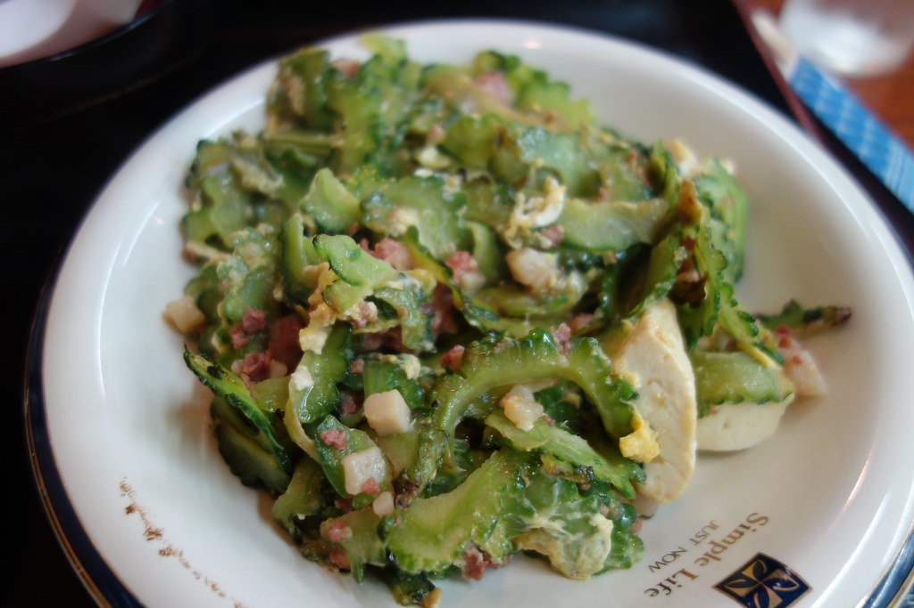
步行至國際通，3 間餐廳選 1。
沖繩家庭料理老店，有榻榻米包廂，氣氛輕鬆溫馨。距飯店步行約 5 分鐘。
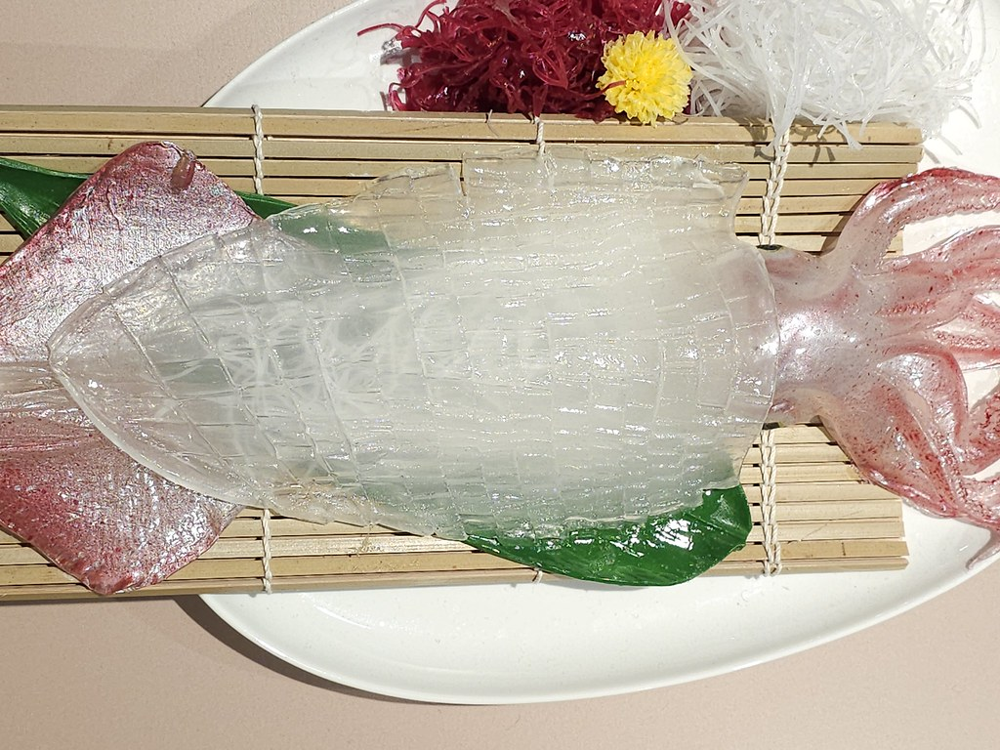
套餐制沖繩料理，含泡盛、海葡萄、豬腳，超值豐盛，適合想一次吃到多樣料理的朋友。
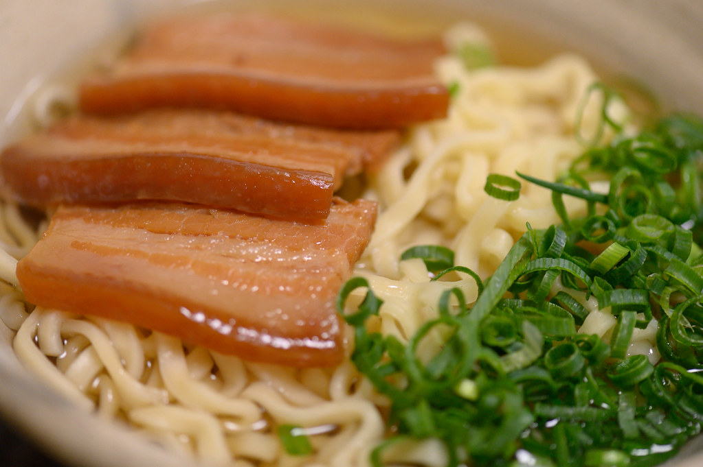
在地人去的傳統食堂，不用訂位，隨到隨吃。適合第一天剛到不想麻煩的輕鬆選擇。
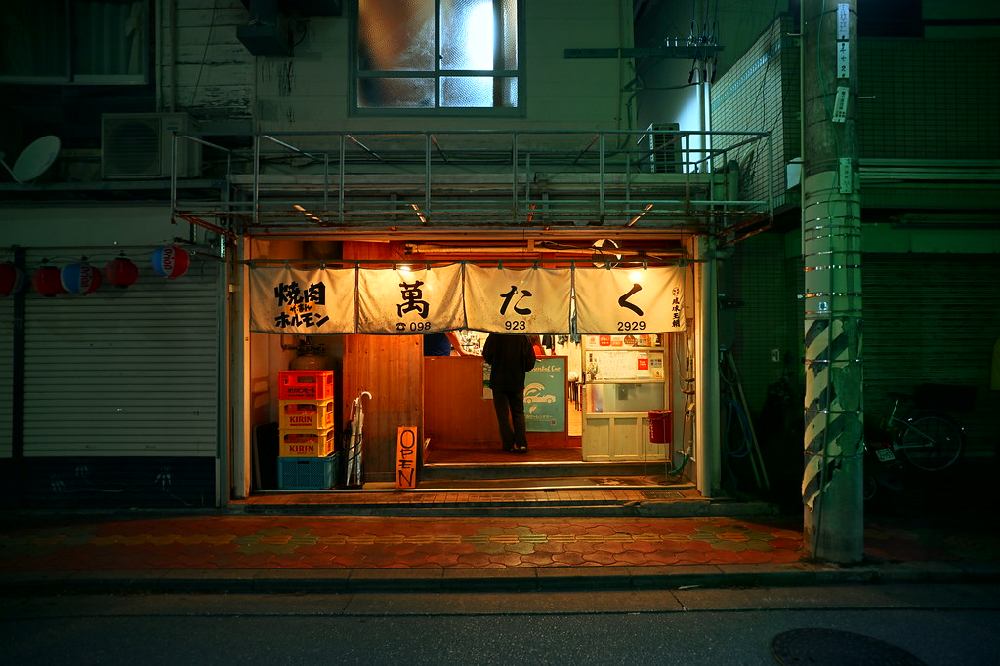
20:30藥妝、紀念品隨意逛，21:30 回飯店休息。
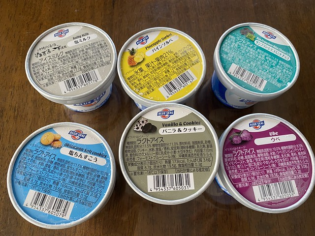
💡 建議購買 Yui Rail 一日券 ¥800（各站窗口購買）
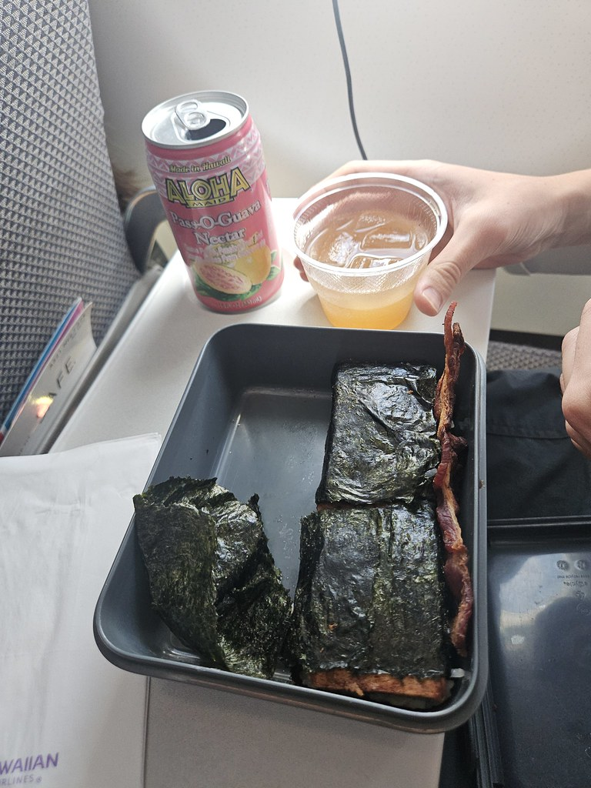
08:00⏰ 07:00–18:00 售完提前關門
沖繩靈魂早餐，SPAM 午餐肉 + 厚煎蛋 + 海苔包白飯。07:00 開門，步行 12 分鐘可到。
必吃價位：¥400–700 / 個
Google Maps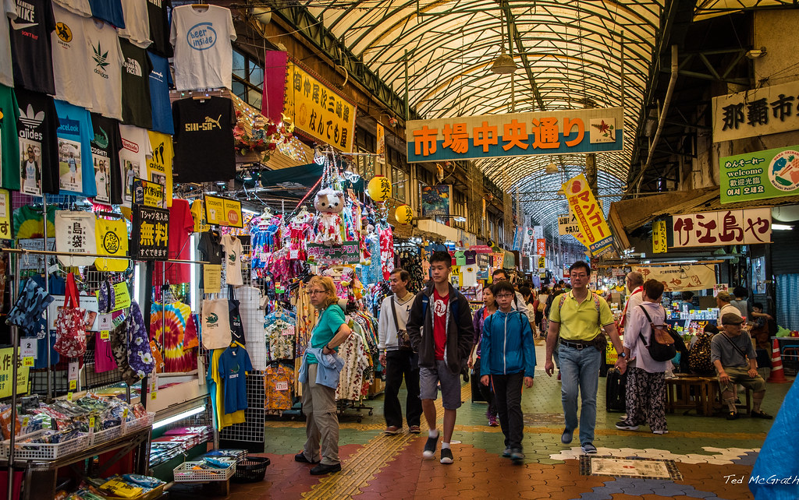
09:00⏰ 08:00–21:00 週三休
免費入場室內那霸最具生命力的傳統市場，販售沖繩食材、熱帶水果、海鮮。早上最熱鬧，攤販剛開、食材最新鮮，逛逛感受市場氛圍即可。
Google Maps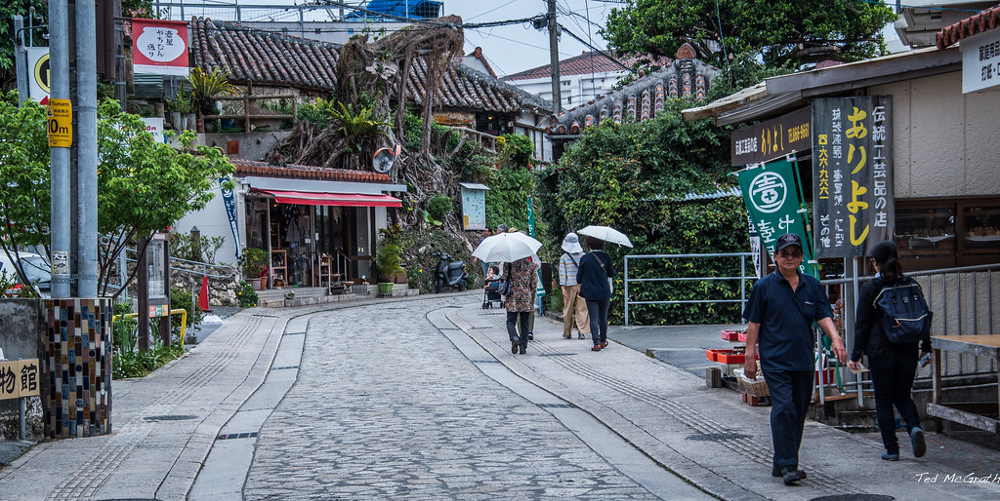
10:00⏰ 10:00–18:00 各店略有不同
免費「やちむん」為沖繩方言的「陶器」，約 300 年歷史的傳統陶藝街，距牧志市場步行 10 分鐘。可買小陶碗、杯子當伴手禮，價格合理，輕鬆散步。
Google Maps牧志 / 縣廳前一帶，3 間餐廳選 1。
縣廳前百貨地下樓，多種餐廳並排，適合口味各異的 3 人各自選擇喜歡的店。不用訂位。
Google Maps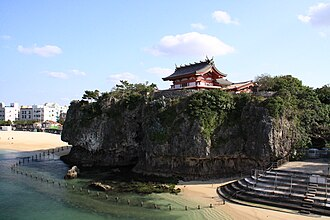
13:00⏰ 境內 24 小時 社務所 09:00–17:00
免費雨天可去沖繩最古老、地位最高的神社，建在珊瑚礁岩壁上。鮮紅鳥居配上蔚藍大海，下午光線充足，拍照更漂亮。神社有屋頂走廊，下雨也可參觀。
交通：牧志駅 → 旭橋駅（2 站）→ 步行 15 分鐘
Google Maps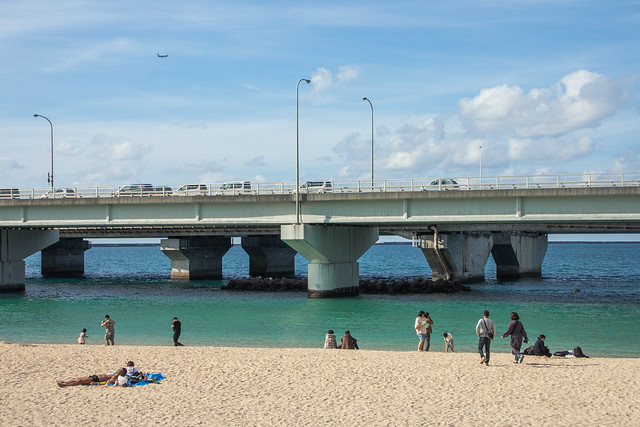
14:00⏰ 09:00–18:00 6 月梅雨季開放
免費距波上宮步行 5 分鐘，城市中心的免費海灘。在地人的日常休閒場所，適合踩水、拍照放鬆。下雨則跳過。
Google Maps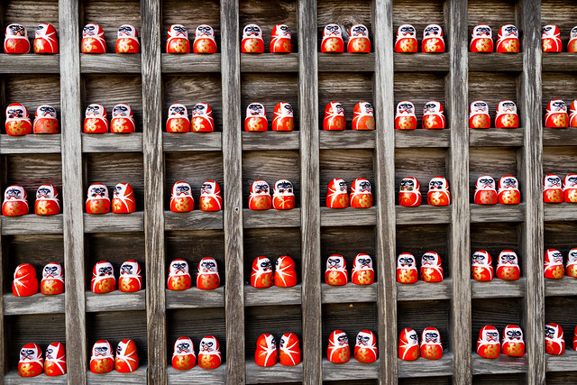
14:30⏰ 自由參觀
免費那霸的達磨寺，寺內擺滿各式大小達磨像，氣氛獨特靜謐。距波上海灘步行約 10 分鐘，是那覇少見的禪宗寺院，適合拍照與沉澱心情。
Google Maps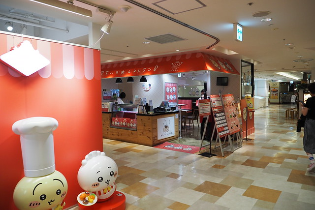
17:30⏰ 10:00–22:00
限定商品吉伊卡哇 × 沖繩守護神「シーサー（獅薩）」聯名限定伴手禮店在 3F，全日本獨家。逛完直接在 Parco City 餐廳樓層用晚餐，有海景餐廳多間可選。
今天行程長，快速吃。7-11 / FamilyMart 日本便利商店早餐品質很好，飯糰 + 熱咖啡即可出發。
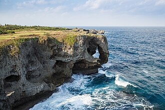
09:45⏰ 08:00–18:00 入場 ¥100
免費沖繩本島著名海岬，珊瑚礁岩石被海風侵蝕成「象鼻」造型。站在岩壁上俯瞰東海，視野壯闊，是沖繩最具代表性的自然景觀之一。
⏰ 11:00–20:00 週三休
沖繩北部美麗複合式商場，以「沖繩最美海景星巴克」聞名，可眺望蔚藍大海邊用餐。
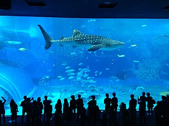
12:50⏰ 08:30–18:30 票價 ¥2,180／人
⭐ 15:00 鯨鯊餵食秀必看！全球第二大水槽「黑潮之海」，鯨鯊與魔鬼魚在眼前悠游。建議提早在大水槽前卡位等餵食秀。預留 3 小時參觀。
點選你們今晚的計畫：
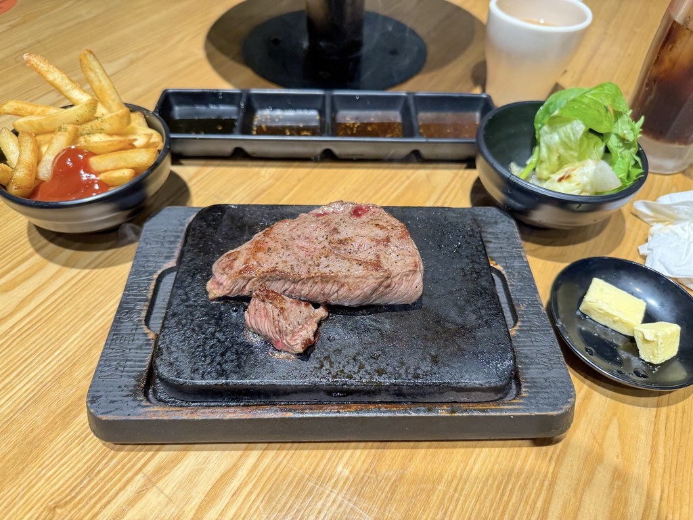
美國村地標餐廳，美式海鮮牛排老店，面海景。建議提前訂位。
⏰ 09:00–18:00 週一休 票 ¥530
完全室內おもろまち駅步行 5 分鐘。常設展介紹琉球王朝歷史、沖繩自然生態與民俗文化，圖文豐富。預留 1.5–2 小時。
Google Maps搭單軌回牧志 / 縣廳前，選擇同 Day 2 晴天午餐選項。
⏰ 10:00–18:00 週二休 建議事先預約
完全室內沖繩傳統「紅型」布料染色，或琉球玻璃製作。全程室內，約 1–1.5 小時，成品可帶回當紀念品。建議事先查詢是否需預約。
Google Maps購買地點：AEON 那覇店 / 各藥妝
送禮 CP 值最高，重量輕好帶
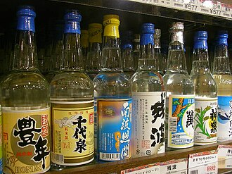
購買地點：國際通酒鋪
送長輩、男性好選擇，注意航空液體規定
購買地點：國際通土產店
常溫保存，可帶回台灣
所有液體、噴霧、凝膠類（包含化妝水、防曬、牙膏）帶進機艙需符合：
行動電源 嚴禁托運，只能放隨身行李。樂桃航空規定如下：